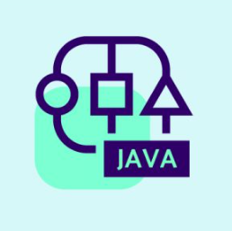

Cursos:
Embora meu início na área de tecnologia tenha ocorrido mais tarde do que o habitual,
consegui acumular conhecimentos valiosos por meio de cursos que enriqueceram meu currículo.
Essa jornada tem sido desafiadora e gratificante, e cada aprendizado fortalece ainda mais minha paixão pela tecnologia.
Até o momento, concluí esses cursos:
 Curso de Algoritmo(Curso em Video)
Curso de Algoritmo(Curso em Video)- Curso de Java Basico(Curso em Video)
-  Curso de Java POO(Curso em Video)
-
- Neste curso, aprendi os conceitos teóricos de algoritmos e pude ver na prática como funcionam,
compreendendo melhor sua aplicação e importância no desenvolvimento de soluções eficientes.
-
- Neste curso, aprendi sobre a origem da linguagem de programação Java, sua sintaxe e suas aplicações práticas em um nível básico,
adquirindo uma compreensão fundamental para o desenvolvimento na linguagem.
-
- Neste curso, aprendi os conceitos da programação orientada a objetos e os apliquei na prática utilizando a linguagem de programação Java,
aprofundando minha compreensão sobre seus princípios e benefícios.
Experiências Profissionais:
Meu início no mundo profissional aconteceu aos 19 anos. Foi uma experiência marcante, pois começar a trabalhar traz desafios e aprendizados únicos.
Cada etapa dessa jornada me ensinou algo valioso, e todas as minhas experiências contribuíram para o meu crescimento.
Algumas das principais experiências que tive são:
- LEGEP MINERAÇÂO LTDA
- VITTON 44(Estagio)
-
- Essa foi minha primeira experiência profissional, na qual desenvolvi habilidades essenciais como trabalho em equipe,
atendimento ao cliente e organização de estoque. Cada uma dessas competências foi fundamental para o meu crescimento e aprendizado no ambiente de trabalho.
-
- Essa é a empresa em que atualmente trabalho é a empresa que é responsável pela fabricação da bebida Guaravita,
onde atuo como estagiário de suporte em TI. No meu dia a dia, vivo a rotina de um estagiário de suporte técnico,
atendendo chamados e lidando com redes computacionais, o que tem sido uma experiência valiosa para meu desenvolvimento na área de tecnologia.